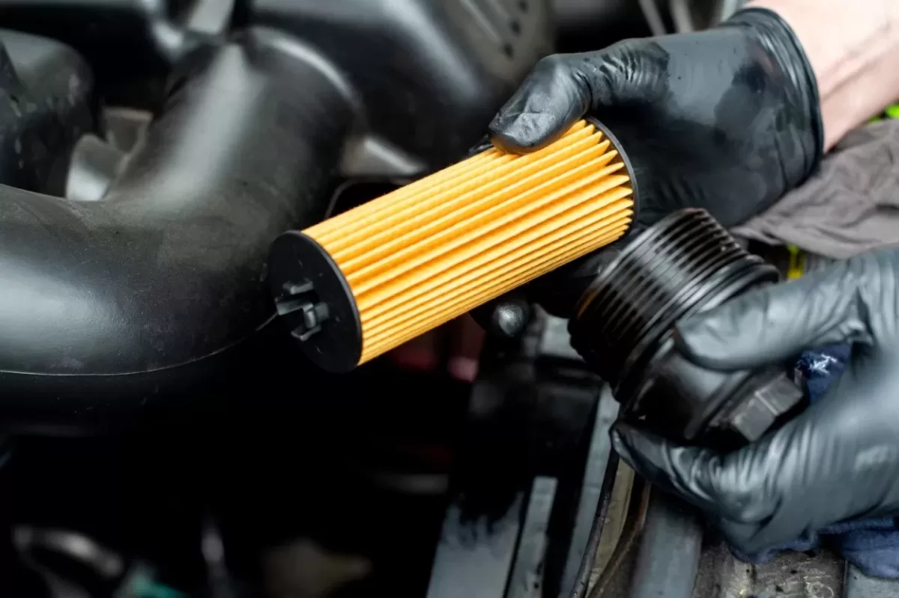
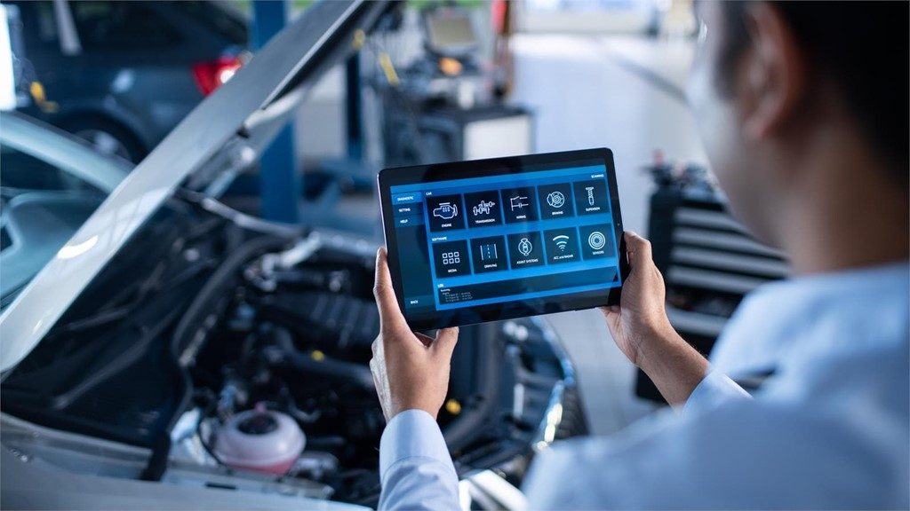
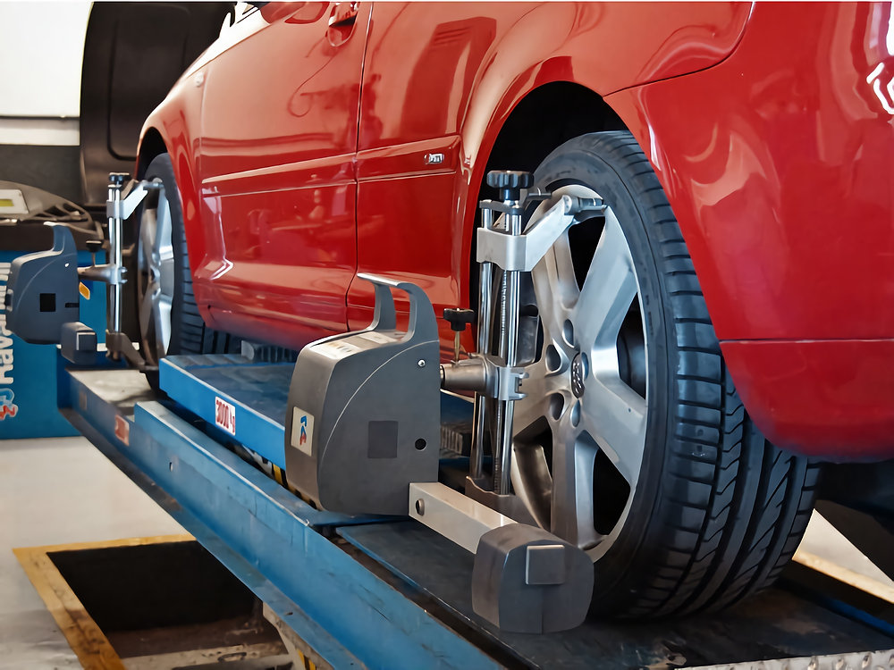

Nuestros Servicios
Mira los servicios que te ofrecemos!
Cambio de aceite y filtros
El cambio de aceite regular es esencial para el buen funcionamiento del motor. En nuestro taller, utilizamos aceites de alta calidad que protegen y mejoran la vida útil de tu motor, asegurando un rendimiento suave y eficiente.
Diagnóstico electrónico
En nuestro taller, la tecnología se une a la experiencia para ofrecerte el diagnóstico electrónico más preciso. Con equipos de última generación, identificamos rápidamente cualquier anomalía en los sistemas electrónicos de tu vehículo.
Alineación de neumáticos
Una alineación adecuada es clave para la seguridad y el confort al conducir. En nuestro taller, utilizamos equipos de vanguardia para asegurar que las ruedas de tu vehículo estén perfectamente alineadas.
